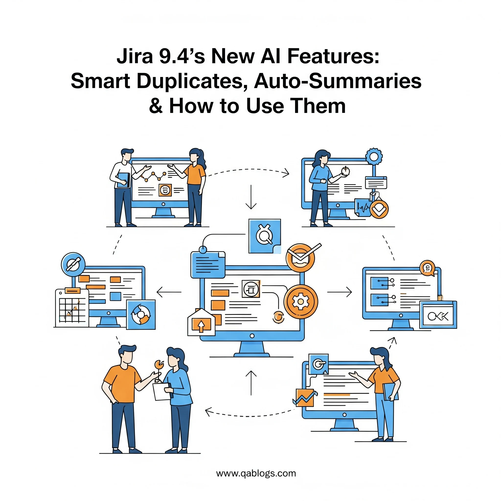

Jira 9.4's New AI Features: Smart Duplicates, Auto-Summaries & How to Use Them

Key Takeaways
- Jira 9.4 introduces Smart Duplicate Detection using AI to identify similar issues across projects with 80% accuracy improvement.
- Auto-Summaries feature generates concise, actionable summaries of lengthy issue descriptions and comments.
- Enhanced Search Intelligence improves issue discovery and maintains project continuity.
- QA teams can reduce administrative overhead by 25-40% while improving issue management efficiency.
The quality assurance landscape is evolving at breakneck speed, and AI-powered tools are no longer a distant dream—they're reshaping how QA teams manage projects, track issues, and streamline workflows today. Atlassian's latest Jira 9.4 release introduces groundbreaking AI features that promise to transform how QA professionals handle duplicate detection, issue summarization, and project management efficiency.
For QA engineers juggling hundreds of bug reports, feature requests, and testing tasks daily, these AI enhancements aren't just nice-to-have features—they're game-changers that can dramatically reduce manual overhead while improving accuracy and team collaboration. Let's dive deep into what these new capabilities mean for modern software testing workflows.
Understanding Jira 9.4's AI Revolution
Jira 9.4 represents a significant leap forward in project management intelligence, introducing three core AI-powered features that directly address long-standing pain points in QA workflows:
Smart Duplicate Detection leverages machine learning algorithms to automatically identify potentially duplicate issues across projects, even when they're written with different terminology or formatting. This addresses one of the most time-consuming aspects of issue management—manually reviewing and consolidating similar reports.
Auto-Summaries uses natural language processing to generate concise, actionable summaries of lengthy issue descriptions, comments, and project updates. For QA teams managing complex testing scenarios with extensive documentation, this feature can save hours of reading and analysis time.
Enhanced Search Intelligence applies AI to improve search relevance and suggest related issues, making it easier for team members to find relevant information and maintain project continuity.
Smart Duplicate Detection: Eliminating Redundancy at Scale
How Smart Duplicates Work
The Smart Duplicate Detection feature uses advanced machine learning models trained on millions of issue patterns to identify potential duplicates with remarkable accuracy. Unlike traditional keyword-based matching, this AI system understands context, intent, and semantic relationships between issues.
Consider this real-world scenario: A QA team receives these three bug reports:
- "Login button doesn't respond when clicked on mobile Safari"
- "Authentication fails on iOS browser - no response from submit button"
- "Mobile login broken - Safari users can't authenticate"
Traditional duplicate detection might miss these connections due to different wording, but Jira 9.4's AI recognizes the semantic similarity and flags them as potential duplicates.
Implementation Benefits for QA Teams
The impact on QA productivity is substantial. Teams typically spend 15-20% of their time managing duplicate issues, according to industry research. Smart Duplicate Detection can reduce this overhead by up to 80%, allowing QA professionals to focus on actual testing and quality improvement activities.
Key advantages include:
- Automated Triage: The system automatically suggests potential duplicates during issue creation, preventing duplicates from entering the backlog in the first place.
- Cross-Project Intelligence: Unlike manual searches limited to specific projects, AI detection works across the entire Jira instance, identifying duplicates that might exist in related projects or different teams.
- Confidence Scoring: Each duplicate suggestion includes a confidence score, helping QA leads make informed decisions about which issues to merge or keep separate.
Practical Implementation Steps
To maximize the benefits of Smart Duplicate Detection, QA teams should:
- Configure Detection Sensitivity: Adjust the AI's sensitivity settings based on your team's needs. Higher sensitivity catches more potential duplicates but may generate false positives, while lower sensitivity reduces noise but might miss legitimate duplicates.
- Establish Review Workflows: Create standardized processes for reviewing and acting on duplicate suggestions. Designate team members responsible for duplicate validation and establish clear criteria for merging versus keeping separate issues.
- Train Team Members: Ensure all team members understand how to interpret confidence scores and make informed decisions about suggested duplicates.
Auto-Summaries: Transforming Information Overload
The Challenge of Information Density
Modern QA projects generate enormous amounts of textual information. A single bug report might include detailed reproduction steps, environment configurations, stack traces, user feedback, and extensive comment threads. For QA managers and team leads reviewing dozens of issues daily, this information density creates a significant bottleneck.
Auto-Summaries address this challenge by automatically generating concise, actionable summaries that capture the essential information without losing critical details.
How Auto-Summaries Enhance QA Workflows
The AI summarization engine analyzes issue content, identifies key information patterns, and generates structured summaries that highlight:
- Critical Information: Priority level, affected components, and severity assessment
- Action Items: Required steps, assigned responsibilities, and deadlines
- Current Status: Progress updates, blockers, and next steps
- Impact Assessment: Affected users, business implications, and risk factors
Real-World Application Example
Consider a complex integration testing issue with 47 comments, multiple environment details, and extensive debugging information. Instead of reading through pages of technical details, the Auto-Summary might generate:
"High Priority: Payment gateway integration failing in staging environment. Root Cause: API timeout issue identified in authentication service. Action Required: DevOps team investigating server configuration. Impact: Blocking release candidate testing. Next Steps: Patch deployment scheduled for tomorrow, regression testing to follow."
This summary captures the essential information in seconds rather than minutes, enabling faster decision-making and more efficient issue resolution.
Practical Integration Strategies for QA Teams
Workflow Integration Best Practices
Successfully implementing Jira 9.4's AI features requires thoughtful integration with existing QA workflows. Here are proven strategies for maximizing adoption and effectiveness:
- Gradual Rollout Approach: Start with pilot teams or specific project types before organization-wide deployment. This allows teams to learn the system's capabilities and establish best practices without disrupting critical workflows.
- Customization for QA Needs: Configure AI features to align with QA-specific requirements. For example, set duplicate detection to prioritize bug reports over feature requests, or customize summary templates to emphasize testing-related information.
- Training and Change Management: Invest in comprehensive training programs that help team members understand not just how to use the features, but when and why to rely on AI suggestions versus manual judgment.
Measuring AI Feature Effectiveness
Establishing metrics to track the impact of AI features helps justify investment and identify optimization opportunities:
- Efficiency Metrics: Track time saved on duplicate management, issue triage, and information processing. Teams typically see 25-40% reduction in administrative overhead.
- Quality Metrics: Monitor duplicate detection accuracy, summary relevance scores, and user satisfaction ratings with AI-generated content.
- Adoption Metrics: Measure feature usage rates, user engagement levels, and feedback scores to ensure successful implementation.
Comparison: AI-Powered vs. Traditional Jira Workflows
Traditional Jira Challenges
Before AI integration, QA teams faced several recurring challenges:
- Manual Duplicate Detection: Teams relied on keyword searches and manual review processes, often missing semantically similar issues or spending excessive time on false positives.
- Information Overload: Complex issues with extensive documentation required significant time investment to understand current status and required actions.
- Inconsistent Prioritization: Without AI-assisted analysis, issue prioritization often relied on subjective judgment rather than data-driven insights.
AI-Enhanced Workflow Advantages
The introduction of AI features creates measurable improvements across multiple dimensions:
- Speed: Duplicate detection that previously took 10-15 minutes per issue now happens in seconds with higher accuracy.
- Consistency: AI-generated summaries provide standardized information presentation, reducing interpretation variations across team members.
- Scalability: AI features maintain effectiveness regardless of project size or team growth, while manual processes become increasingly unwieldy.
- Decision Quality: Data-driven insights and confidence scores help teams make more informed decisions about issue management and prioritization.
Advanced Tips for QA Professionals
Optimizing AI Feature Performance
To maximize the value of Jira 9.4's AI capabilities, consider these advanced strategies:
- Data Quality Foundation: Ensure consistent issue labeling, standardized templates, and clear description formats. AI features perform best with high-quality input data.
- Custom Field Optimization: Configure custom fields to capture QA-specific information that enhances AI analysis, such as testing phases, environment details, and defect categories.
- Integration with Testing Tools: Connect Jira with automated testing platforms to provide AI features with richer context about test results, coverage metrics, and failure patterns.
Building AI-Aware QA Processes
Successful AI integration requires evolving traditional QA processes:
- Hybrid Decision-Making: Develop frameworks that combine AI insights with human expertise, ensuring teams leverage automation while maintaining critical thinking and domain knowledge.
- Continuous Learning: Establish feedback loops that help AI features learn from team decisions and improve accuracy over time.
- Cross-Team Collaboration: Use AI-generated summaries and duplicate detection to improve communication between QA, development, and product teams.
Future Implications for QA Professionals
Evolving Role of QA in AI-Enhanced Environments
As AI features become more sophisticated, QA professionals' roles are evolving from manual task execution to strategic oversight and quality validation. This shift requires new skills and approaches:
- AI Quality Assurance: QA professionals are becoming responsible for testing and validating AI-generated content, ensuring accuracy and relevance of automated summaries and duplicate suggestions.
- Process Optimization: Teams are focusing more on workflow design and optimization, leveraging AI insights to identify bottlenecks and improvement opportunities.
- Strategic Analysis: With routine tasks automated, QA professionals can dedicate more time to strategic analysis, risk assessment, and quality planning.
Preparing for Continued AI Evolution
The AI features in Jira 9.4 represent just the beginning of AI integration in project management tools. QA teams should prepare for continued evolution by:
- Skill Development: Investing in AI literacy, data analysis capabilities, and process automation expertise.
- Tool Evaluation: Staying informed about emerging AI tools and platforms that complement Jira's capabilities.
- Community Engagement: Participating in QA communities and forums to share experiences and learn from other teams' AI implementation journeys.
FAQs
What are the main AI features in Jira 9.4?
Jira 9.4 introduces three core AI features: Smart Duplicate Detection, Auto-Summaries, and Enhanced Search Intelligence. These features use machine learning to improve issue management efficiency and reduce manual overhead.
How does Smart Duplicate Detection work?
Smart Duplicate Detection uses advanced machine learning models to identify potentially duplicate issues across projects, even when they're written with different terminology. It provides confidence scores and works across the entire Jira instance.
What are Auto-Summaries in Jira 9.4?
Auto-Summaries use natural language processing to generate concise, actionable summaries of lengthy issue descriptions, comments, and project updates, helping QA teams quickly understand complex issues without reading through extensive documentation.
How can QA teams implement these AI features?
QA teams should start with a gradual rollout approach, customize features for QA-specific needs, invest in training, and establish metrics to measure effectiveness. Begin with pilot teams before organization-wide deployment.
What benefits do these AI features provide for QA teams?
These features can reduce administrative overhead by 25-40%, improve duplicate detection accuracy by up to 80%, save hours on information processing, and enable faster decision-making through AI-generated insights.
Conclusion: Embracing the AI-Powered Future of QA
Jira 9.4's AI features represent more than incremental improvements—they signal a fundamental shift toward intelligent, automated project management that can transform how QA teams operate. Smart Duplicate Detection and Auto-Summaries address core pain points that have plagued QA professionals for years, offering tangible benefits in efficiency, accuracy, and team collaboration.
The early adoption of these AI capabilities positions QA teams at the forefront of industry evolution, enabling them to focus on higher-value activities while maintaining the quality standards that define excellent software products. As AI technology continues advancing, teams that embrace these tools now will be best positioned to leverage future innovations.
For QA professionals ready to transform their workflows, the time to explore Jira 9.4's AI features is now. Start with pilot implementations, measure the impact, and gradually expand adoption across your organization. The future of quality assurance is intelligent, automated, and more strategic than ever before.
Ready to revolutionize your QA workflow? Share your experiences with AI-powered project management tools in the comments below, and subscribe to QA Blogs for more insights on emerging technologies in software testing and quality assurance.
Join Our Community of QA Professionals
Get exclusive access to in-depth articles, testing strategies, and industry insights. Stay ahead of the curve with our expert-curated content delivered straight to your inbox.
Nikunj Mistri
Founder, QA Blogs
About the Author